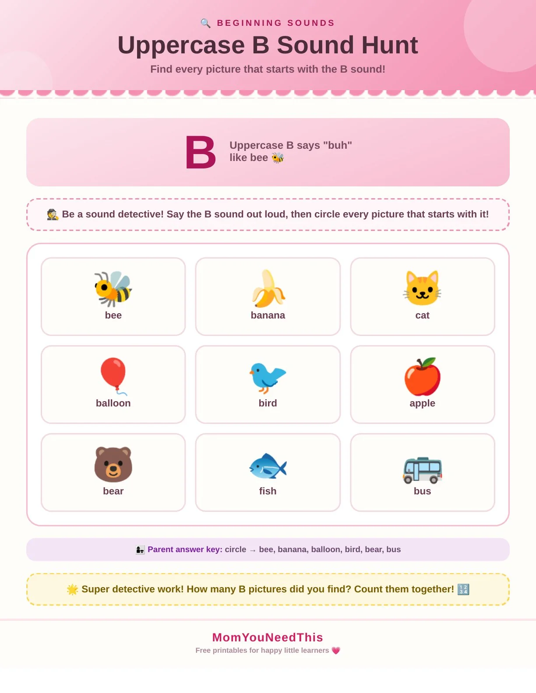

Uppercase B Sound Practice Recognize The Uppercase B And Its Sound
Start letter learning with this uppercase B printable. Your child will spot the capital letter, practise hearing its popping /b/ beginning sound in familiar words, and learn to count its two bumps.
🐻 Bear
⚽ Ball
🍌 Banana
Quick Answer
Capital B is the letter that starts names, sentences and book titles — and this page turns it into a hunt. Preschoolers search a page of mixed letters for every uppercase B, circling each find while they practise its beginning sound, the lip-popping /b/ in Bear, Ball and Banana. It builds phonemic awareness and letter recognition, is designed for ages 3-5, and prints free at home with no signup needed.

🔠 Find The Uppercase B
Say the letter name and sound together: “B says /b/.” Then find every uppercase B on the page and stamp or circle it. B hides among the other bump letters — P has only one bump, so count the bumps: B always has two.
⬇️ Download Free Printable 🖨️ Print🎁 Free printable for toddlers & preschoolers
🎵 Make The Sound Together
Make the b sound together: press your lips, build a tiny puff of air, and pop — b-b-Bear! The pop is the fun part. Try it with all three words on this page: Bear, Ball, Banana, exaggerating the pop each time.
🧲 Letters Are Everywhere
Capital B is the letter that starts names and sentences, so it is worth spotting out in the world: the B on book covers, the B at the start of Ben and Bella, the B on a Bakery sign. Every sighting is a small win to celebrate.
🎨 Keep Exploring Free Letter Activities
More alphabet learning activities are added regularly for toddlers and preschoolers.
🎁 View All Free Resources🔊 The B Sound
The B sound is made with the lips. They press together, build up a little puff of air, and pop open — b. It is a burst sound: you cannot stretch it like s or f, so practise it in quick pops: b-b-Bear, b-b-Ball.
Capital B begins Bear, Ball and Banana on this page, and it has a second job no small letter can do: it starts names and sentences. That is why children meet it on book covers and signs long before they read whole words.
B also begins bus, bed, bird and boat — good words for a spotting game after the printable. And its shape is worth a close look: a straight line with two bumps is B; one bump would make it a P.
🖨️ How to Use This Printable
Get started in minutes — everything here is free and made for busy parents.
- Download the printable. Tap the download button to save the free Free Uppercase B Sound Practice file to your device.
- Print it out. Use any home printer and regular paper — cardstock works great for pages little hands will use again and again. The print button opens the full-size page in a new tab if you prefer to print from there.
- Learn together. Sit with your child and pop the sound out loud each time a B is found. Count the two bumps together to check it is really a B and not a P. Short sessions work best.
- Explore more. Check the free printables linked below for your next activity.
❓ Free Uppercase B Sound Practice FAQs
Is this Free Uppercase B Sound Practice printable free?
Yes — every printable on MomYouNeedThis is 100% free to download and print. No signup, no payment, just tap the download button and print fresh copies of the B page whenever your child wants another hunt.
How do I use this uppercase B sound printable?
Tap download, print the page, and settle in together. First say the letter's name and pop its sound — /b/, like Bear. Then hunt: circle every capital B hiding among the other letters, counting the two bumps to be sure. Short, playful sessions work better than long lessons for little learners.
What literacy skills does this practice?
Letter recognition, beginning sounds, and print awareness — plus careful looking: telling B apart from P and R, its one-bump neighbours, sharpens the visual discrimination early readers rely on. These are the core pre-reading skills that prepare children for phonics and reading.
🔗 More Free Printables You’ll Love
Pair this printable with more free learning activities from the MomYouNeedThis library.
- 🔊 Free Lowercase Letter B Sound PracticeFree printable lowercase letter b sound practice for little learners.
- 🔊 Free Uppercase Letter C Sound PracticeFree printable uppercase letter c sound practice for little learners.
- 🔊 Free Uppercase Letter D Sound PracticeFree printable uppercase letter d sound practice for little learners.
- 🔊 Free Uppercase Letter E Sound PracticeFree printable uppercase letter e sound practice for little learners.